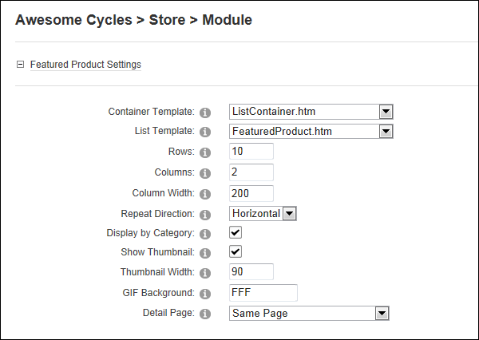

Managing Featured Product Settings
How to set the layout of featured product in the Store Catalog module.
The "Show Featured Products" field in the General Settings section must be checked to configure these settings.
See "Managing Store Catalog General Settings"
- Go to the Store Catalog module.
-
- Maximize
 the Sort Setting section and modify any of the following settings:
the Sort Setting section and modify any of the following settings:
- At Container Template, select the template to be applied to the default Catalog page.
- At List Template select the template to be applied to the default Catalog page.
- In the Rows text box, enter the number of row of items to be displayed across the page.
- In the Columns text box, enter the number of columns of items to be displayed down the page.
- In the Column Width text box, enter the pixel width of each column.
- In the Repeat Direction text box, select either Horizontal or Vertical to set the direction that items incrementally repeat. I.e. Down the page or across the page.
- At Show Thumbnail, select from these options:
- to display a thumbnail image.
- In the Thumbnail Width text box, enter the pixel width of each thumbnail image.
- In the GIF Background text box, enter the hex value of the background color to use with GIF image format. The default setting is white (FFF). Valid hexadecimal values are #FFFFFF, #f00, FF0000, F09, etc.
- to hide the thumbnail image.
- At Detail Page, select the page where product details are displayed. Choose Same Page to open the product details on the same page. This is the typical behavior however if you have multiple Store Catalog modules on your site and you want the product details to be displayed on that page, then select that page name.

-